Women Safety SOS
Turning nature's strategies into actionable artifacts for innovators, designers
and researchers
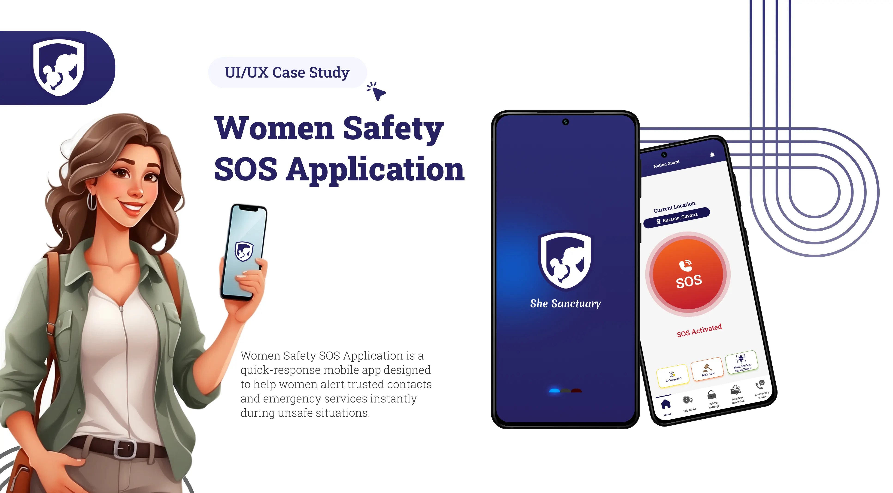
Overview
My Role
Researching, Conversation Design, Prototyping flows, Visual Design and UI systems.
Outcome
We expect to see a considerable difference in the way industrial designers, researchers and innovators approach sustainable design.
Team
4 Designers, 2 Eng
Mentor
Nathan Sherdoff
Status
Working on building a working prototype

Context
72% of surveyed companies
have found that Biomimicry led to new product ideas or designs.
Less than 10%
of them are able to apply Biomimicry in their workflows.
Sources: PMC/ResearchGate
The Problem
Biomimicry as a tool for design is not as straightforward...
Scattered Information
Users often have to jump between databases, research papers, and design platforms.
Dealing with Complexities
Existing databases require extensive understanding -harder for non-experts.
Unspecific Solutions
Platforms don't always deliver applicable, cross-disciplinary solutions.
So we asked ourselves...
How do we enable problem solvers to access and apply nature's insights in a sustainable and practical way?
Potential Impact
20%
Reduction in Design Waste
25-50%
Faster development cycles
2x
More Sustainable Material Adoption
Process
Mapping out the common Problem Solving Flow
The best products today blend AI seamlessly into familiar workflows. To build Bud, we wanted to do the same.
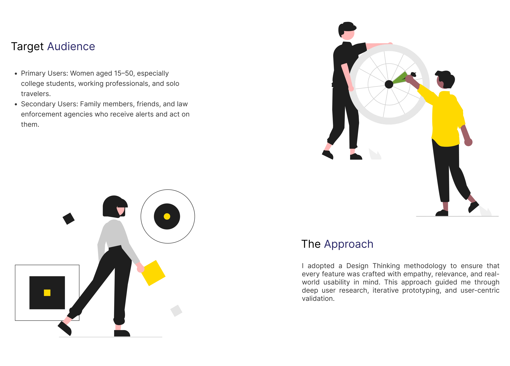
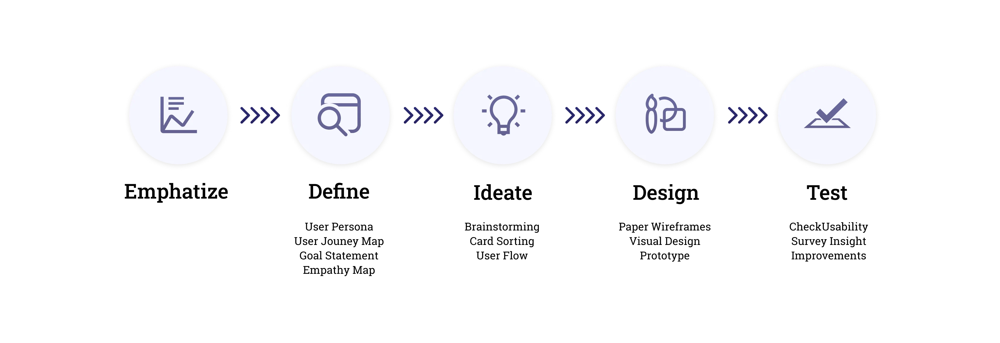
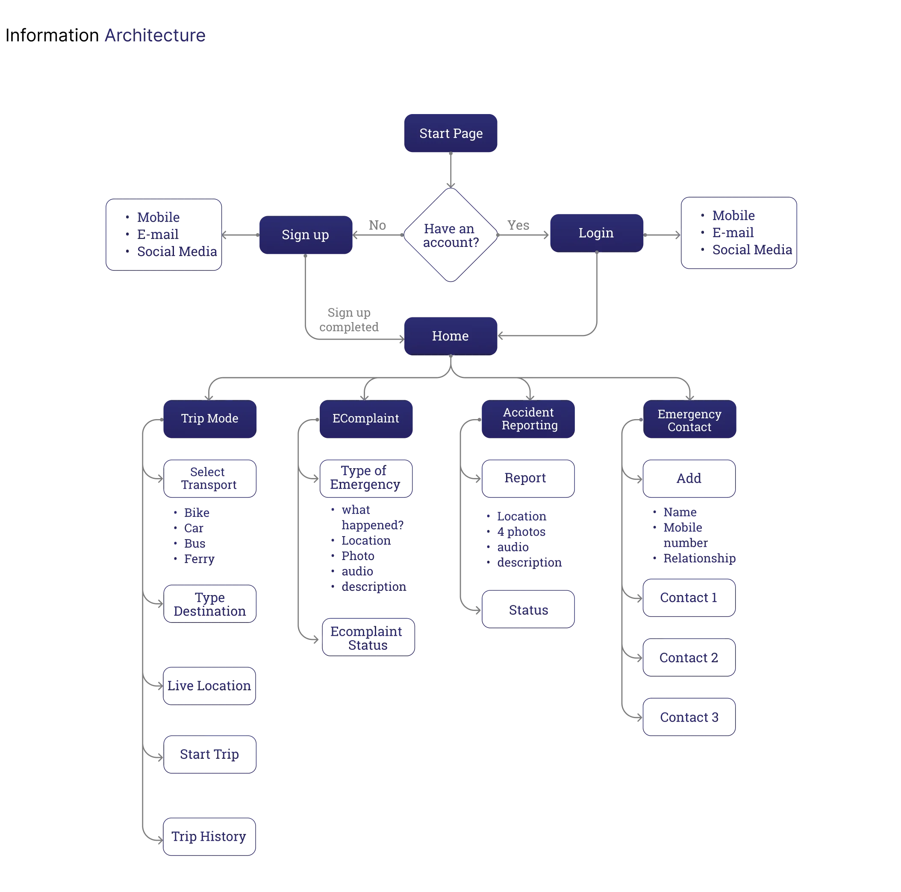
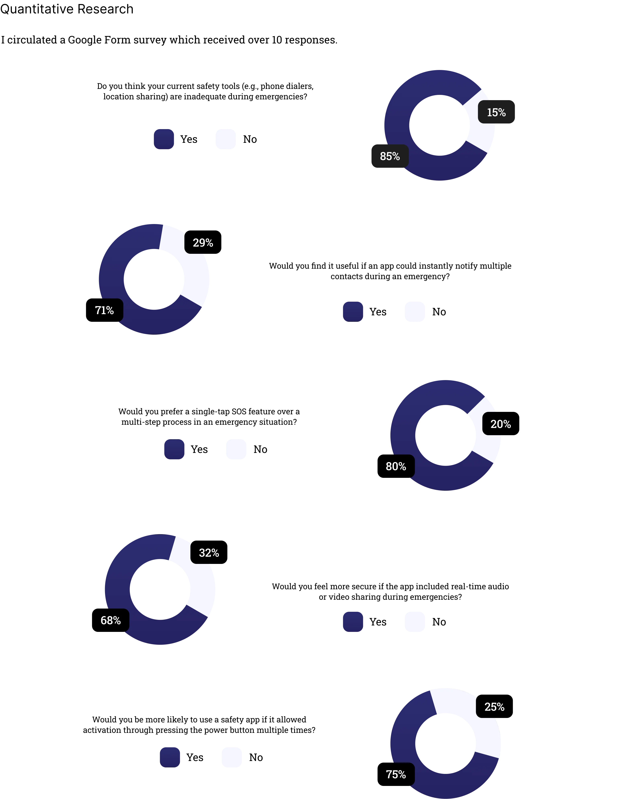
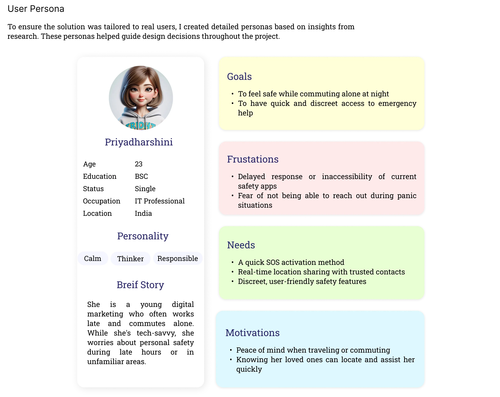
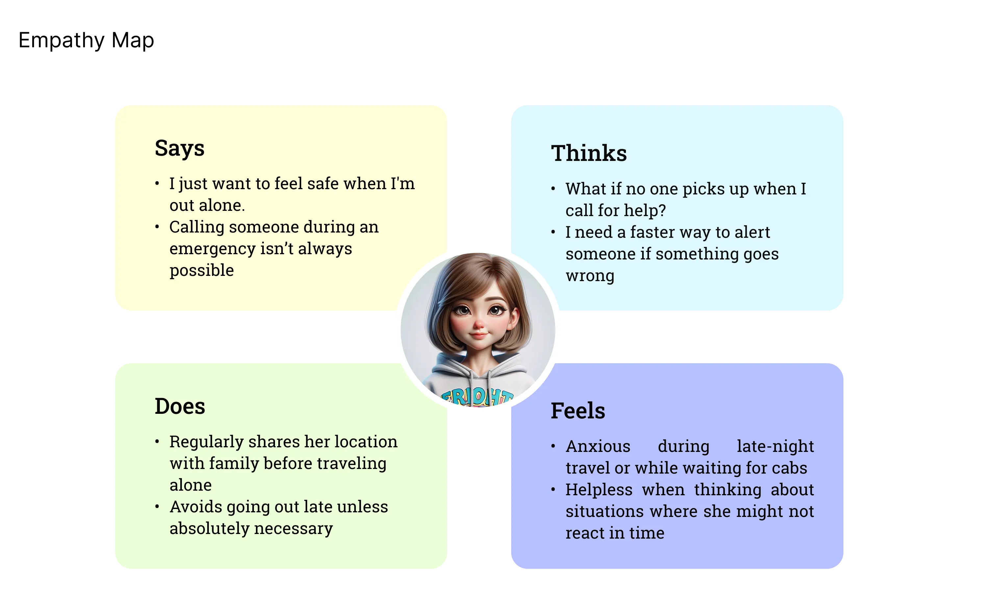
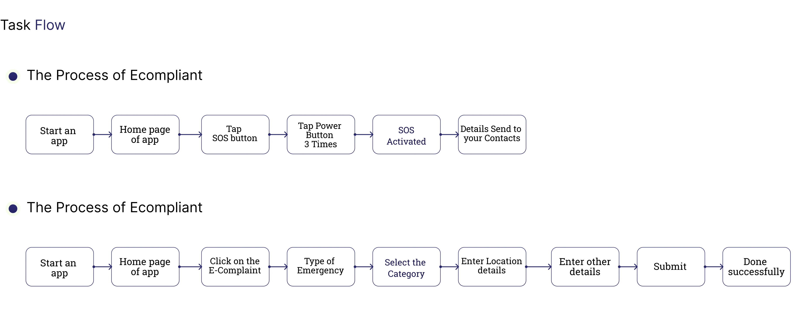
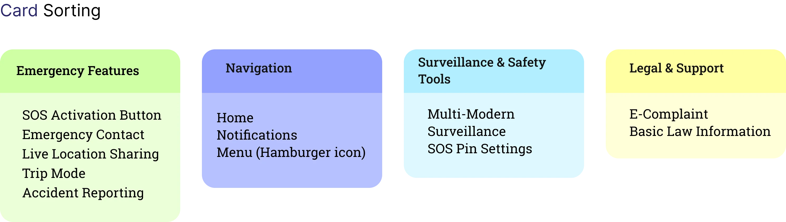
How Its Works
Mapping out the common Problem Solving Flow
The best products today blend AI seamlessly into familiar workflows. To build Bud, we wanted to do the same.
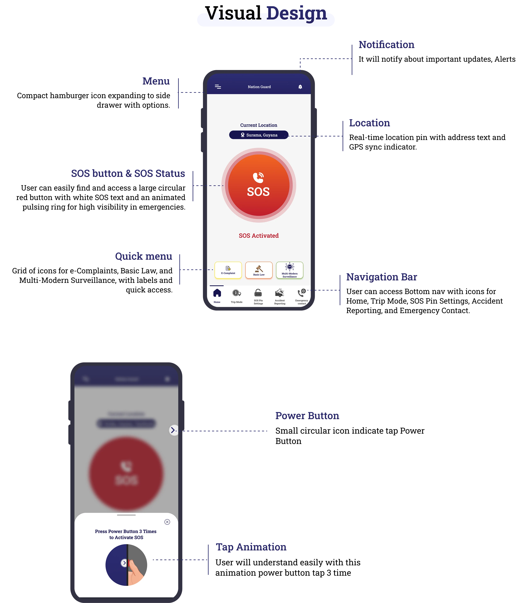
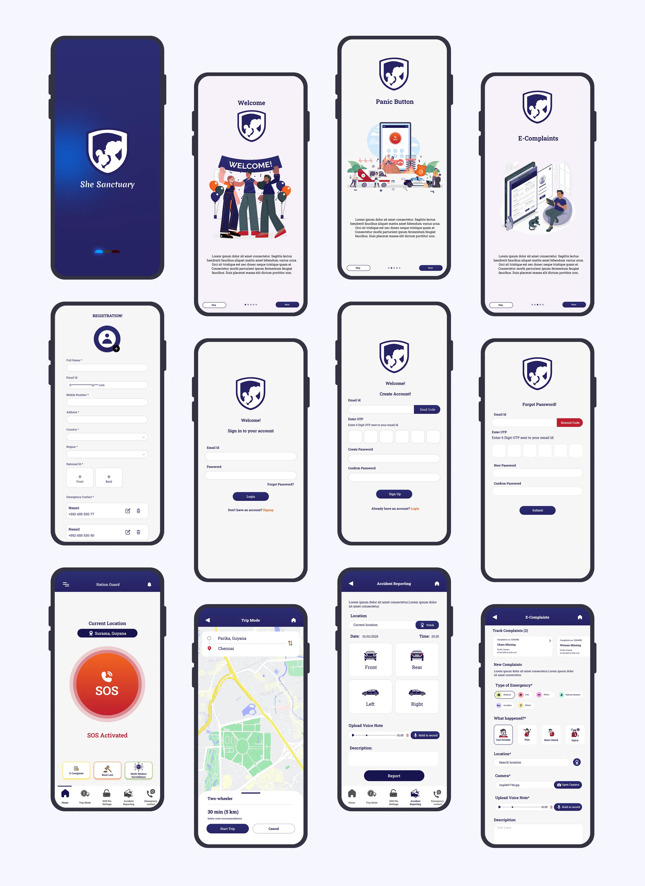